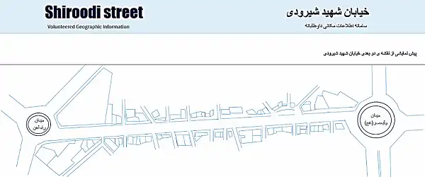
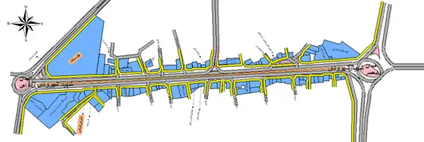

-

Ali Khosravi Kazazi
Shahid Rajaee University
-

Farhad Hosseinali
Shahid Rajaee University
Shahid Rajaee University
Shahid Rajaee University
Quality is a key challenge of Volunteered Geographic Information (VGI). A large number of VGI-related studies have evaluated the data quality through a comparison with authoritative information. Since authoritative data is not always available, scholars have welcomed quality enhancement methods over quality assessment. This study proposes a new method for enhancing the quality of data in VGI projects. The proposed method ranks participants based on the EigenRumor algorithm. Therefore, the better participants will have more influence on the final results. The method was implemented in a part of Arak, a city in Iran. The results of this study show that the proposed method can effectively enhance data quality.
Participants clustering
Initial information available to participants
Enhanced results in terms of quality